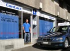

Anciennement à l'avenue de Morge 44, L'auto-école Contact se trouve maintenant à la rue de la Borde 57, toujours à Lausanne.
Voilà 10 ans que j'ai quitté mon ancienne profession pour retourner sur les bancs de l'école. Passionné d'automobiles, j'ai passé 9 mois à l'Ecole Professionnelle Romande des Moniteurs de Conduite, et obtenu mon permis de moniteur auto et moto en novembre 2002.
Quels sont les points forts de ce nouveau job? Bien sûr, le contact avec les gens, être à leur écoute et leur répondre au moyen de prestations adaptées à leurs besoins, pour cela, je dispose d'une salle de théorie de 40m2, pour 12 personnes, équipée d'ordinateurs modernes pour étudier la théorie; différents programmes disponibles en 9 langues.
Des cours de sensibilisation sont aussi organisés régulièrement, en groupe, et individuellement sur demande. Nous pouvons également vous orienter pour suivre les cours de samaritains (sauveteurs ou premiers secours).
Concernant les cours pratiques voiture, de la « formation du débutant », des « courses de contrôle », au « perfectionnement d'anciens conducteurs », nous sommes disponibles du lundi au samedi toute la journée, sur rendez-vous. Nous nous occupons « de tout », de la demande du permis d'élève conducteur, et offrons un suivi régulier pendant toute la période de formation jusqu'au moment de l'examen. L'auto-école Contact vous propose également les cours 2-phases, en partenariat avec différents centres de formation de la région. (Savigny, Cossonay ou Romont).
Pour terminer cette brève présentation de mon activité, étant moi-même motard, j'ai le plaisir d'organiser régulièrement les cours de base pour élèves scooter et motocyclistes, (6 heures, 8 heures ou 12 heures obligatoires selon le permis d'élève conducteur), en principe les samedis, et ceci toute l'année tant que les conditions météorologiques le permettent ! Des cours de perfectionnement ou de préparation à l'examen sont aussi prévus.
Luc
<% content_for :aside do %> Luc Vuagniaux, moniteur de conduite diplomé auto + moto
<% end %>